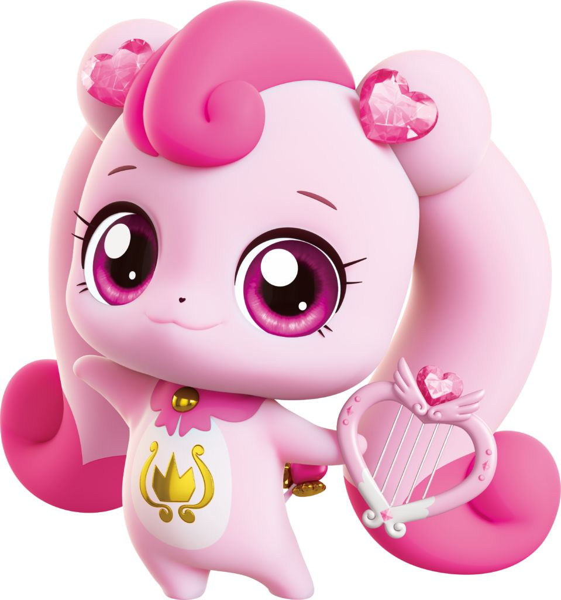
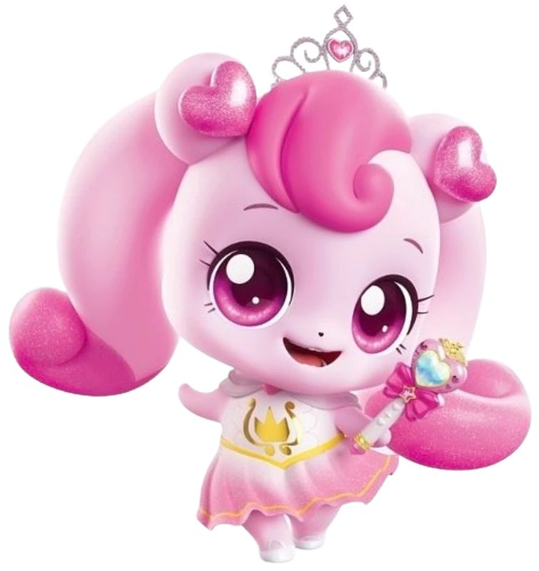

캐치! 티니핑
사랑을 담당하는 티니핑 💖
반짝반짝 캐치! 티니핑
15마리의 보석 티니핑들을 로미가 티니핑 스쿨에서 교육하며 캐치하는 이야기

알송달송 캐치! 티니핑
열쇠 티니핑을 주제로 미스틱 마을에서 온 새로운 티니핑들을 캐치하는 이야기

새콤달콤 캐치! 티니핑
총 22종의 디저트 티니핑을 캐치하는 이야기

슈팅스타 캐치! 티니핑
로미가 하모니 마을에 나타난 새로운 티니핑들을 캐치하는 이야기로, 더 화려해진 이야기
프린세스 캐치! 티니핑
주인공 로미가 다양한 프린세스로 변신하여 이야기를 이끄는 시리즈